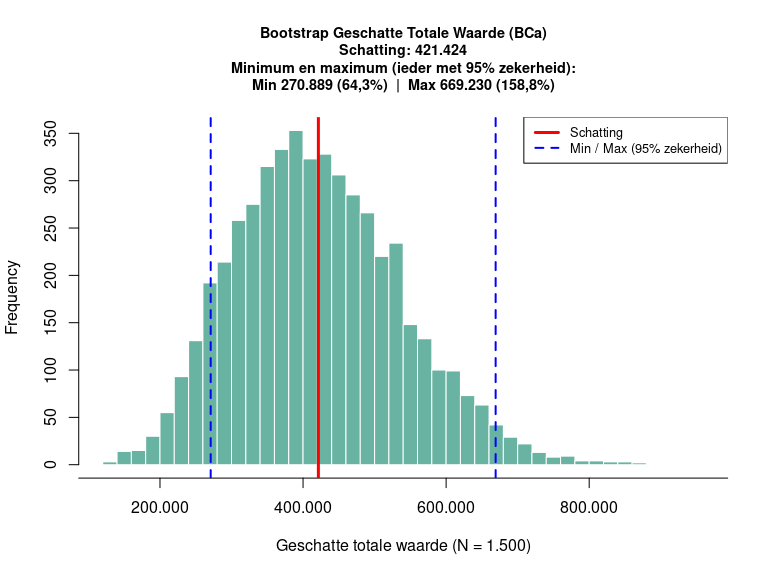
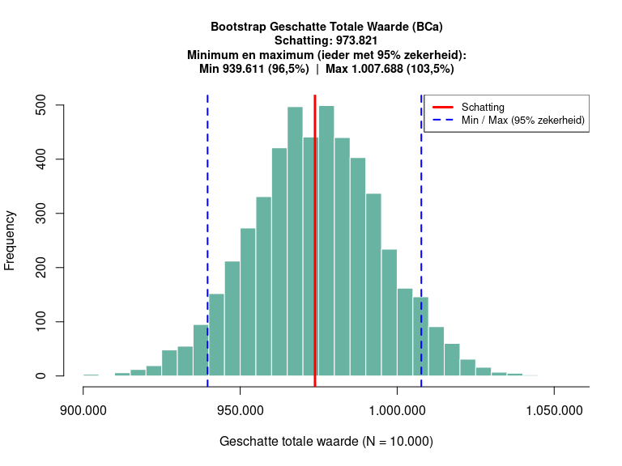

Inleiding
Package bootsum is bedoeld voor een auditcontext. Het maakt het mogelijk een schatting, gebaseerd op een postensteekproef, te maken van de totale omvang van geldposten die zowel te hoog als te laag kunnen zijn geadministreerd. Daarbij berekent het direct een betrouwbare minimum- en maximumgrens met een door de auditor gewenste zekerheid (bijvoorbeeld 95%).
Installatie
Je kunt de ontwikkelversie van bootsum installeren van GitHub als:
if (!requireNamespace("devtools", quietly = TRUE)) {
install.packages("devtools")
}
devtools::install_github("cfjdoedens/bootsum")De functie: bootsum()
De functie bootsum() berekent en visualiseert de geschatte totale waarde van een financiële populatie (massa) op basis van een steekproef.
Hierbij wordt gebruikgemaakt van de BCa-methode (Bias-Corrected and accelerated bootstrap) via het boot package. Deze methode is zeer geschikt voor financiële data, omdat het automatisch corrigeert voor scheefheid (skewness) in de verdeling van de steekproef. De functie geeft direct de keiharde minimum- en maximumgrenzen terug, zonder verwarrend statistisch jargon.
Parameters
De functie vereist minimaal de volgende twee argumenten:
- v: Een numerieke vector met uitsluitend positieve waarden (jouw getrokken steekproef van posten).
- N: Het totale aantal posten in de volledige massa (populatie) waaruit de steekproef is getrokken.
Daarnaast zijn er twee optionele argumenten:
- certainty: Het gewenste zekerheidspercentage voor de minimum- en maximumgrens (standaard 0,95, oftewel 95%).
- b: Het aantal bootstrap-iteraties (standaard 100000). Voor snelle tests kun je dit verlagen, maar voor definitieve rapportages wordt de standaardwaarde aanbevolen.
Voorbeeldgebruik
Hier is een voorbeeld van hoe je de functie in de praktijk gebruikt bij de controle van een populatie facturen.
# Fictieve steekproef van 15 gecontroleerde posten (bijv. factuurwaarden in euro's)
steekproef <- c(120.50, 305.00, 45.20, 99.99, 1050.00,
23.45, 88.00, 500.00, 210.00, 340.00,
75.00, 115.00, 890.00, 42.10, 310.00)
# De totale populatie (massa) bestaat in dit voorbeeld uit 1.500 posten
populatie_grootte <- 1500
# Voer de bootstrap analyse uit.
# Let op: Voor deze README knitr-render gebruiken we tijdelijk b = 5000 iteraties
# zodat het bouwen van de documentatie snel gaat.
# Voor een echte audit gebruik je idealiter de standaard (b = 100000).
set.seed(123) # Seed instellen voor een reproduceerbare plot in deze README
resultaat <- bootsum(v = steekproef, N = populatie_grootte, certainty = 0.95, b = 5000) Naast de overzichtelijke visualisatie, retourneert de functie op de achtergrond een lijst met de exacte wiskundige grenzen. Deze kun je opvragen door het resultaat te printen:
# Bekijk de exacte berekende waarden
print(resultaat)
#> $obs_est
#> [1] 421424
#>
#> $min_bound
#> [1] 270888.9
#>
#> $max_bound
#> [1] 669229.9Toetsen met een simulatie op een bekende verdeling
Om de betrouwbaarheid van de methode te demonstreren, simuleren we hieronder een volledig bekende populatie. We genereren 10.000 posten die normaal verdeeld zijn rond de €100. Omdat we alle data hebben, weten we de échte totale waarde exact.
Vervolgens doen we alsof we een auditor zijn: we trekken blindelings een piepkleine steekproef van slechts 50 posten, en we vragen bootsum() om op basis daarvan de totale waarde te schatten, inclusief een minimum en maximum met 95% zekerheid.
# 1. Creëer de 'echte' populatie (10.000 posten, gemiddelde = 100)
set.seed(42)
volledige_populatie <- rnorm(10000, mean = 100, sd = 15)
# Bereken de werkelijke, geheime totale waarde
echte_waarde <- sum(volledige_populatie)
# 2. De Auditor trekt een willekeurige steekproef van slechts 50 posten
steekproef_simulatie <- sample(volledige_populatie, size = 50)
# 3. Laat bootsum de massa schatten (b = 5000 voor snelheid)
resultaat_simulatie <- bootsum(v = steekproef_simulatie, N = 10000, certainty = 0.95, b = 5000)